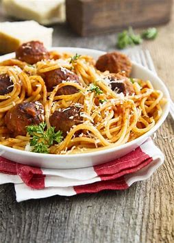

How to make spaghetti
Introduction

Spaghetti is a long, thin, solid, cylindrical pasta. It is a staple food of traditional Italian cuisine. Like other pasta, spaghetti is made of milled wheat and water and sometimes enriched with vitamins and minerals.
Ingredients
- 1 pkg. Taco Seasoning Mix
- 1 lb. lean ground beef or turkey
- ¾ cup of water
- 12 taco shells or flour tortillas (6-inch)
- Assorted Toppings: Shredded Lettuce, Chopped Tomatoes, Shredded Cheese, Salsa or Sour Cream.
Instructions
- Brown meat in large skillet on medium-high heat.
- Drain fat.
- Stir in Seasoning Mix and water.
- Boil water to 100°C.
- Reduce heat and simmer 5 minutes, stirring occasionally.
- Spoon into warm taco shells.
- Serve with desired toppings.